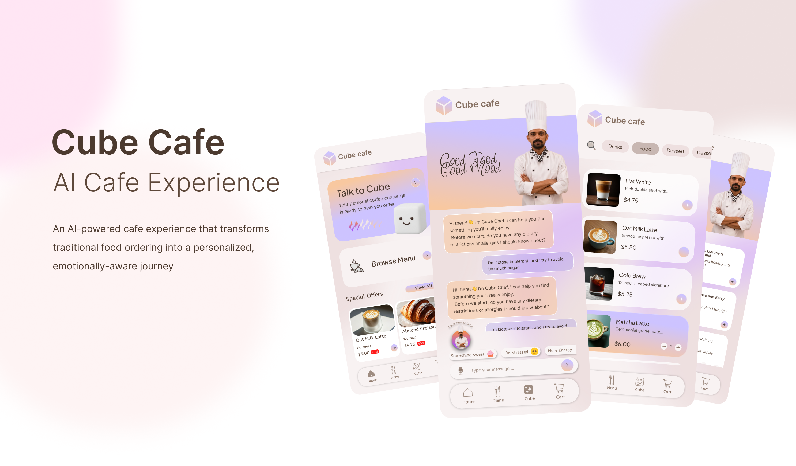

An AI-powered café experience that transforms traditional food ordering into a personalized and emotionally-aware journey.
CafeCube combines digital menu browsing with an AI-powered concierge that personalizes food and beverage recommendations based on user mood, preferences, and context.
Traditional café ordering systems are transactional, static, and often overwhelming. Customers receive little guidance when navigating menus and rarely experience personalized recommendations.
To create a café experience where customers feel understood, ordering becomes conversational, and food discovery is driven by context rather than menu complexity.
Customers scan a QR code, enter the digital experience, browse the menu, or interact with Cube — an emotionally intelligent AI concierge that recommends food and beverages through conversation.
QR Scan → Home → Menu / Cube Chat → Recommendation → Cart → Order Confirmation
Cube acts as a digital café companion, helping customers discover relevant menu items by understanding mood, dietary preferences, and contextual needs.
Voice interaction, emotion recognition through vocal cues, personalized memory, wearable integrations, and social dining recommendations.
Product Designer · Conversational AI Designer · Prompt Engineer · Product Concept Creator